SQLeo Beginner Users Guide
Revised: 14/06/2012 by Alan Shiers
Table of Contents
SQLeo serves as a utility to allow connection to multiple RDBMS (rational database management systems). While SQLeo has powerful features we know you are eager to start using, assumptions are being made before you begin using it. The following topics under Terminology, Security and JDBC Drivers serve as prerequisite understanding prior to using SQLeo. This guide will cover most of the basic features targeting the beginner user and while SQLeo has many advanced features, these may be covered in another guide for advanced power users.
There is terminology specific to database design and a database query language found in this guide that the reader will encounter. Where possible, a definition will be provided on a particular term pertinent to the subject being discussed. Other terms may be left to the reader to discover their definition by researching the multitude of resources available either on the internet or in books. See the section on Introduction to SQL for further information.
In general, databases are secure data stores, often with proprietary and sensitive data. With this in mind, someone or several individuals are assigned to a database system as administrators. Administrators know intimately the inner workings of how a database is designed and how it functions. Security measures are typically integrated within every database management system. In order to obtain access to any RDBMS, you need to arrange with an administrator to have a user account created. A user account will allow you access with a user name and password combination. Depending on your role as a user, your account will be assigned certain RIGHTS or privileges to parts of the database. Typically, an administrator has complete access to every part of a database; however, a user may only have access to certain tables, and have only READ RIGHTS on some tables, while both READ and WRITE RIGHTS on other tables. While an administrator can alter parts of a database, typically a user cannot. Who has access to a database, and to what degree a user has access are generally determined in a company policy statement outlining the roles people play in a company structure and what their requirements are in order to perform their daily functions in relation with the RDBMS.
In order for SQLeo to connect to any given RDBMS, you need to provide a set of JDBC (Java Database Connectivity) Drivers which serve the function as a communications bridge between SQLeo and the database system. Depending on the RDBMS you are trying to access, you can usually obtain JDBC Drivers from the vendor’s website. The JDBC Drivers are really a set of Java classes that are bundled inside a file with the jar file extension. As an example, if you wanted to obtain the JDBC Drivers to a MySQL database, at the time of this writing, you would navigate your browser to this URL: http://dev.mysql.com/downloads/connector/j/ and download the file mysql-connector-java-5.1.20.zip. Using a ZIP Archive utility, you would then extract the contents of the zipped archive file which would contain a file named: mysql-connector-java-5.1.20.jar. You would place the file mysql-connector-java-5.1.20.jar in a directory where you collect JDBC Drivers for all the databases you intend to connect to through SQLeo.
When you first launch SQLeo, you are presented with an interface that displays a list of supported database systems on the left hand pane of the Metadata Explorer. See IMAGE 1. If you select any one of the items in the list, a message will appear at the bottom of the interface stating that it could not find the JDBC Drivers for that particular database system. The message refers to a ClassNotFoundException and names the file it requires. Next to the message is a button labelled “install” that you can use to launch a dialog box that allows you to navigate to the directory on your hard drive where you are storing your JDBC Drivers.
IMAGE 1
Once you have told
SQLeo where to find the Drivers for the database system you are
attempting to connect to, you can then provide SQLeo with further
information it requires to make a connection. To do this, you need
to launch a dialog box by clicking on the button with the image:
 and labelled new datasource. In the case of connecting to a
MySQL database system, you will be presented with the following
dialog window:
and labelled new datasource. In the case of connecting to a
MySQL database system, you will be presented with the following
dialog window:
IMAGE 2

In the field labelled name, type a new name for the database you are connecting to. In the field labelled url edit the existing string: jdbc:mysql://<host>:<port3306>/<database>
This URL string requires you to replace those parts that are in brackets: <…>
The part labelled <host> is where you place the domain name where the database system resides on the network or over the internet. Typically this would follow the pattern such as: www.someplace.com or it could be an IP Address. If the database resides on your computer and not on the network, then you would replace <host> with the term: localhost or 127.0.0.1
The part labelled <port3306> is the port on which the database listens to incoming requests. Though this can be changed by an administrator, the port number by default is 3306. The port number will be different depending on the RDBMS.
The part labelled <database> would be the actual name given to the database. If it was named mydb then that is what you would enter.
In all, the string should end up looking something like this: jdbc:mysql://www.someplace.com:3306/mydb
Enter the user name and password assigned to you by the database administrator and check off the additional options as required. Click the OK button to connect to the database.
The next few sections of this guide are intended for those generally unfamiliar with databases, and how you communicate with a database to influence the data stored within it. If you are already familiar with these concepts, you may wish to skip this section.
The database is a data store consisting of tabular type data structures known as Tables. These Tables, in turn, consist of Columns or Fields of specific data types such as: STRING (VARCHAR), INT, LONG, DECIMAL, DOUBLE, FLOAT, DATE, etc. If you have used a spreadsheet application, you have worked with tabular data structures. Databases are similar, however more complex.
The term database system implies that the data is managed to some level of quality (measured in terms of accuracy, availability, usability, and resilience) and this in turn often implies the use of a general-purpose database management system (DBMS). A general-purpose DBMS is typically a complex software system that meets many usage requirements, and the databases that it maintains are often large and complex. The utilization of databases is now so widespread that virtually every technology and product relies on databases and DBMSs for its development and commercialization, or even may have such software embedded in it. Also, organizations and companies, from small to large, depend heavily on databases for their operations. ~ Wikipedia
This guide is not a definitive resource on the SQL Language. To learn more, see the following references for tutorials and comprehensive coverage on the subject.
An Introduction to database Systems eight edition – by C.J. Date – ISBN-10: 0321197844
Beginning Database Design: From Novice to Professional – by Clare Churcher –
ISBN-10: 1590597699
A Visual Introduction to SQL – second edition – by David Chappell and J. Harvey Trimball Jr. – ISBN-10: 0471412767
SQL is an abbreviation for Structured Query Language. SQL is the query language that enables database programmers to retrieve data from, to modify data in, and to manage most relational databases. Although there are some differences in the way SQL is supported among the various database vendors, the language is standard enough that after you’ve learned it for one database product, you’ll be able to use it with any other database product that supports SQL. SQL consists of only a few types of statements, and it is easy to learn well enough to perform basic queries. As your needs become more complex and your confidence in your SQL querying abilities grows, so too will the complexity of the queries that you write.
The main interface for SQLeo is a multi-document interface consisting of a menubar, a toolbar, and the main body area can contain multiple internal windows each performing a different function. The first internal window that automatically displays is called the Metadata Explorer. This guide will provide an overview of each internal window based on an existing database. The examples provided are specific to the datab ase FCS_DB and serve only as an instructional aid. The Metadata Explorer internal window has a split pane that contains a tree like structure on the left and on the right, is the Content pane; it will display the metadata information corresponding to the database you happen to have opened at the time.
The term metadata can be summed up in the description "data about the containers of data". Essentially, it provides details about the internal database structure. With access to the metadata, you can explore a listing of Tables, the Columns within each Table, and the data types of each Column, among a variety of other details contained within the database structure.
The tree structure you see in the left hand pane in IMAGE 3 contains a listing of many of the database types SQLeo can connect to. Using the example below, we can see that a connection has been made to a MySQL database whose name is FCS_DB. Since the MySQL node in the tree is the active node with a connection, you can open the node further by clicking on the + and – symbol to the left of each node. The FCS_DB database contains several other entities: a TABLE node, a VIEW node, a LOCAL TEMPORARY node, an ALL OBJECT TYPES node, and a LINKED OBJECTS node. As you select each node the content pane on the right will display different information. In the image, the TABLE node is selected and therefore the content pane will display the list of Tables contained within this database. Currently selected is the employees table.
IMAGE
3

From the Content pane it is possible to drill down even further to discover the details about each table. With the employees table already selected, you can use the right mouse button to bring up additional menu items which provide options on the selected table.
IMAGE 4
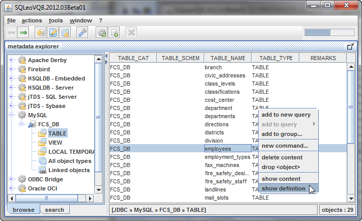
If we select the
option show definition, we will be presented with a new
internal window that displays further details on the employees
table.
IMAGE 5
From IMAGE 5 you can see that the DEFINITION internal window displays details on the employees Table providing such information as Column names and their data types: INT, DATETIME, VARCHAR, etc.
You will notice that the DEFINITION internal window has a number of tabs you can select to obtain other information on the employees Table. If we select the primary keys tab, we can discover which Column has been set as having a Primary Key. In this case, as seen in IMAGE 6, the Column named ID has the Primary Key. Typically one Primary Key is assigned to each Table by the database designer, however not all Tables will necessarily have a Primary Key.
IMAGE 6
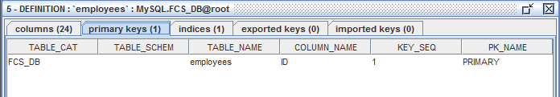
If we select the indices tab as in IMAGE 7, we can see that the Column ID has not only a Primary Key, but also is indexed to allow for faster searches when the database performs a query on this particular Table. The exported keys and imported keys tabs provide additional information regarding Reference Primary Keys and Foreign Keys respectively. Not every database system supports these features, which is why you will notice the value zero indicated on the tabs.
IMAGE 7
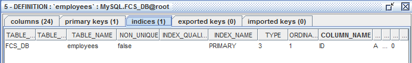
We can navigate back
to the Metadata Explorer by clicking on the button with the image
 and labelled metadata explorer on the button toolbar. Or we can click
on the Back button with the arrow image
and labelled metadata explorer on the button toolbar. Or we can click
on the Back button with the arrow image
 on the button toolbar. We will right click on the employees table
again. We select the option show content on the employees
Table as seen in IMAGE 8.
on the button toolbar. We will right click on the employees table
again. We select the option show content on the employees
Table as seen in IMAGE 8.
IMAGE 8

This time we are presented with a popup dialog box asking if we wish to view all the data in this Table, or if we just want to see how the Table looks without the data.
IMAGE 9

If we select the yes option, a new internal window displays further details on the employees table as seen in IMAGE 10.
IMAGE 10
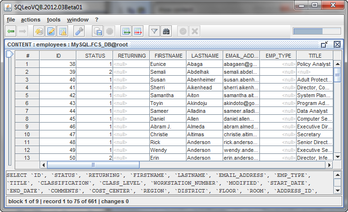
The interesting thing about the CONTENT internal window is that you have the familiar scrollbar on the right which you can use to scroll and view some of the records. The total number of records has been divided for display purposes. Some tables can potentially have thousands of records, so if you wish to view the remaining records, you have a special scrollbar on the left of the Table which allows you to continue viewing the remaining records. At the bottom of the CONTENT window is the SQL query that was used to obtain all the columns from the employees Table.
You can learn more about the CONTENT window here.
Returning to the
Metadata Explorer internal window using the back
 button, we will discuss the node in the tree labelled VIEW.
button, we will discuss the node in the tree labelled VIEW.
IMAGE 11
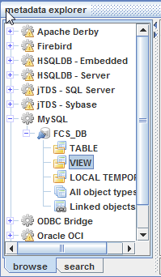
A VIEW is a logical entity that acts like a table but is not one. A VIEW is similar to a prepared SQL statement that provides a way to look at columns from different tables as though they are all part of the same table. Another term sometimes used is a Virtual Table. When selecting the VIEWS node, you would be provided with a listing of VIEWS created for the database.
The LOCAL TEMPORARY node refers to two types of temporary tables: local and global. Local temporary tables are visible only to their creators during the same connection to an instance of some database systems as when the tables were first created or referenced. Local temporary tables are deleted after the user disconnects from the instance of the database system. Global temporary tables are visible to any user and any connection after they are created, and are deleted when all users that are referencing the table disconnect from the instance of the database system.
The All object types node displays all the objects in the database schema.
The Linked objects node is a feature to manage groups of objects created by the user.
At the bottom of the Metadata Explorer internal window are two tabs. By default the browse tab is selected allowing the user to navigate the tree of database types. Since a database can contain many Tables and each Table can contain many Columns, often a person needs another way to locate certain entities within the database. SQLeo comes with a Search tool that allows you to find what you’re looking for. If we select the search tab, we are presented with a number of fields and drop down options that allow us to perform a search on the entire database schema. The user is encouraged to experiment with the various options to get familiar with this versatile search tool.
As an introduction and an example, we have entered the Column named email_address into the field labelled column and have left the default option contains selected. When we run the search on our criteria we have the results which you can see in IMAGE 12.
IMAGE
12

The search returns two tables containing the same column name: email_address. If we wanted to be more specific, we could have selected equals from the drop down options as in IMAGE 13.
IMAGE 13 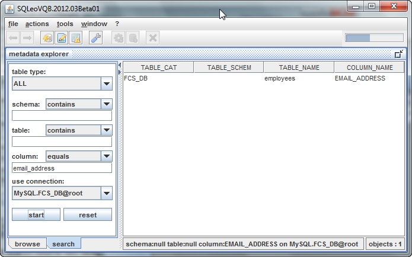
This has allowed us to narrow our search to just the one Table employees. From the content pane we can perform additional functions on the Table being displayed. Using your right mouse button and clicking on the Table, we can view a popup menu providing us with additional options. These are the very same options you would have seen when the Metadata Explorer was in browse mode. The last two options: show content and show definition we have already been covered in this guide. The remaining options will be discussed elsewhere in the guide. See IMAGE 14.
IMAGE 14
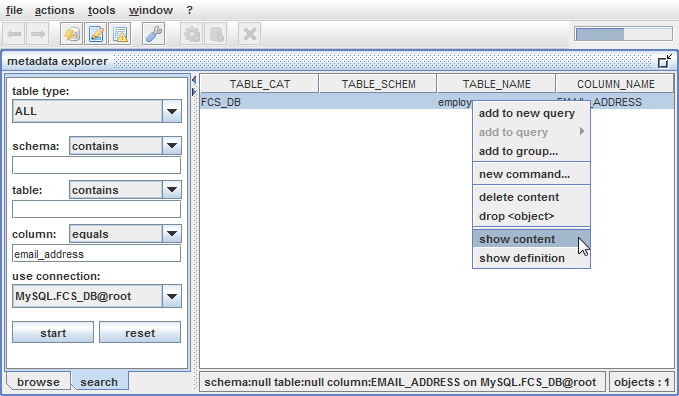
The Visual Query Designer is another internal window we can bring up by selecting the File/New Query menu.
IMAGE 15
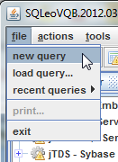
You should see an internal window that appears as in IMAGE 16. Take note that at the bottom of the window are two tabs labelled designer and syntax. The QUERY window, by default, opens in the designer mode. We will discuss the syntax mode later. The QUERY window will automatically load all the Table names in the lower portion of the window. In the top portion you’ll see another tree like structure where each node is labelled in accordance with the known keywords from the SQL language: SELECT, FROM, WHERE, GROUP BY, HAVING, AND ORDER BY. With the use of the right mouse button you will be able to access popup menus that provide additional options when you select each node in the tree.
First, we want to select a Table from which we want to extract data. To construct a simple query, we will select the employees Table. You can either double click the table in the list, or you can drag ‘n drop the Table into the Content pane on the right.
You can perform the same procedure in the Metadata Explorer by selecting a Table, right clicking on it to obtain the popup menus with the options: new query or add to query…
IMAGE 16
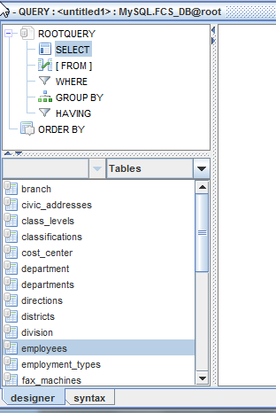
You should see your Table in the Content pane as in IMAGE 17.
IMAGE 17
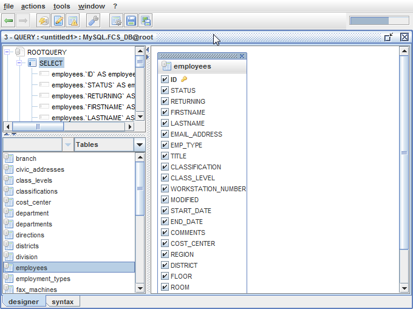
The Content pane displays another internal window that contains the listing of all the Columns contained within the employees Table. Each Column name has next to it a checkbox with a check inside each of these. Notice also, that the SELECT node also displays all the Column names. What we need to decide now is what Columns are we really interested in. We will uncheck all the Columns except for FIRSTNAME, LASTNAME, EMAIL_ADDRESS, and TITLE. As we uncheck the Columns, the list will decrease on the SELECT node. In our example we see the following in IMAGE 18:
IMAGE 18
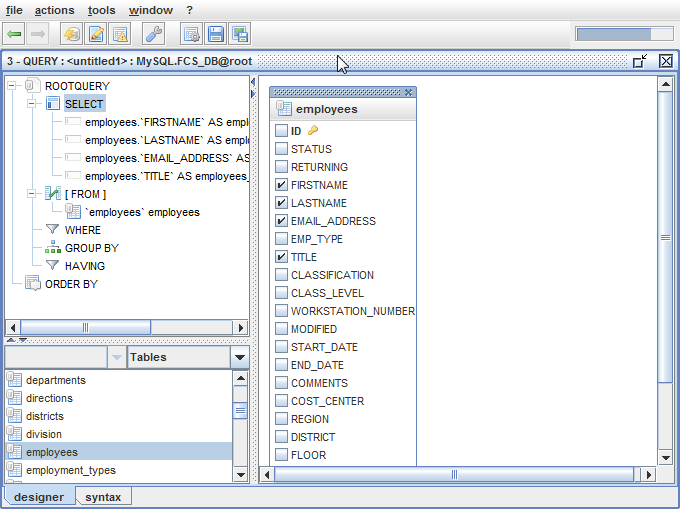
If we were to run this query as is, we would have a tremendous listing of employee names. We are really only interested in seeing records on employees whose last name is “Campbell”. So, we will place a condition on this query stating just that. To add a condition on a query, we will right click on the WHERE node. This will cause a popup menu to appear with the option: add condition.
IMAGE 19
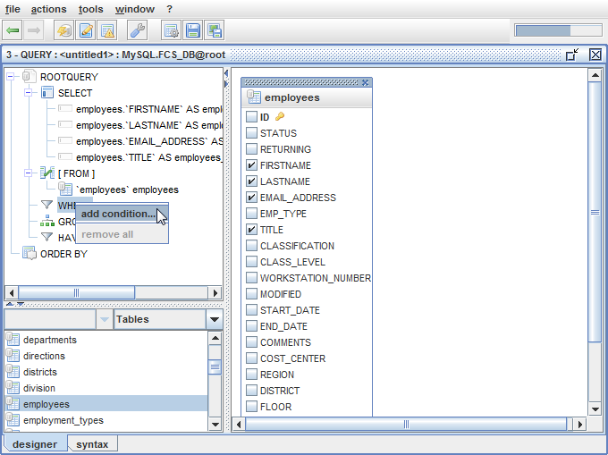
Selecting this option will bring up a dialog box that allows you to create a condition based on several expression operators: =, <, >, <=, >=, <>, LIKE, NOT LIKE, etc. These operators can be accessed from the drop down combo box as seen in IMAGE 20.
IMAGE
20

For our example we will leave the default equals sign (=) and type in our condition. See IMAGE 21. The top textbox is where you type the Column name you wish to place the condition on. The bottom textbox is where you type the remainder of the expression. In our case, we type “Campbell” in quotes.
IMAGE 21
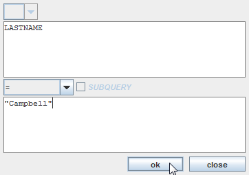
After clicking the OK button, we are returned to the QUERY window. Notice now in IMAGE 22 that the WHERE node contains our condition.
IMAGE 22

We are almost ready to run our query to see the results, but before we do, please note the two tabs at the bottom of the QUERY window labelled: designer and syntax. Up to this point we have been in the designer mode of the QUERY window. If we take this time to select the syntax tab, we will be able to see how the actual SQL query has been constructed by SQLeo. See IMAGE 23. This will be the query that is sent to the database and it in turn, will respond with a RecordSet containing tabular data which we can display.
IMAGE 23
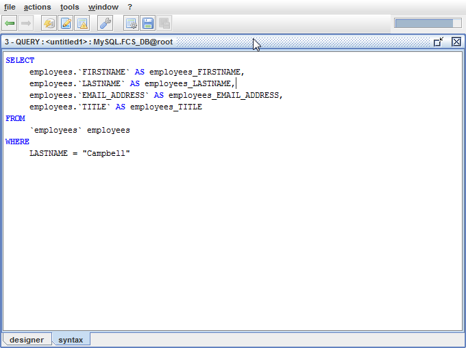
At this point we can
run our query by clicking on the button with the image
 and labelled launch query. For our example, we have the
results displayed in the PREVIEW window as in IMAGE 24.
and labelled launch query. For our example, we have the
results displayed in the PREVIEW window as in IMAGE 24.
IMAGE 24

It may be you would want to rearrange the order of your results especially if you have a lengthy list of records. We only have three in our results, but we will re-query the database to give us our results in alphabetical order based on the FIRSTNAME Column. To do this, we return to the QUERY window in designer mode as in IMAGE 25. From the tree under the SELECT node, we right click the child node labelled employees. FIRSTNAME. A popup menu displays more options. We select add to order-by.
IMAGE 25
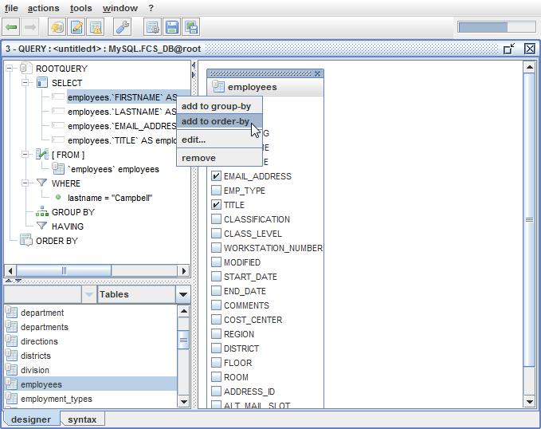
Notice what happens in IMAGE 26. The ORDER BY node now contains the new condition.
IMAGE 26

If you look closer, you can see that the ORDER BY condition by default will arrange the resulting records in ascending order. The suffix ASC is displayed. You may have an occasion when you would prefer to display your records in descending order. You can change this if you wish. Right click on the condition as it appears under the ORDER BY node and select the edit… option as in IMAGE 27.
IMAGE 27
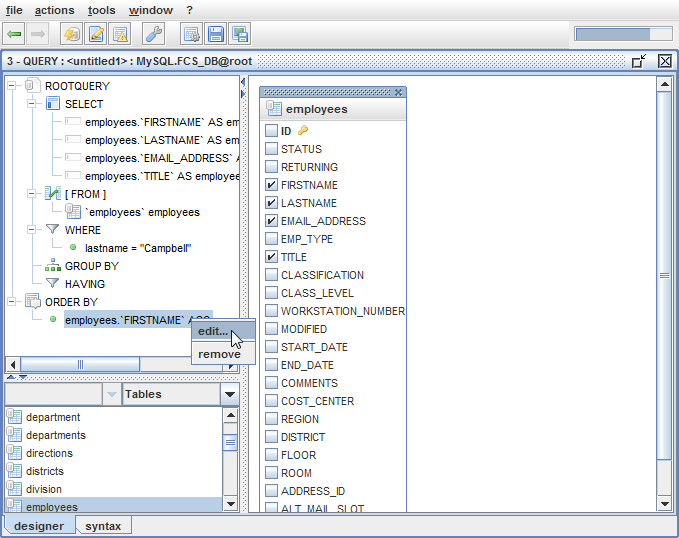
This will launch a dialog box as in IMAGE 28. From here you can select the descending order option.
IMAGE 28

We will not change
the order of the results. Instead we will leave the option to
display in ascending order. If we now launch the query by clicking on
the launch query button
 ,
we will see that our resulting records are now in alphabetical order
by first name. See IMAGE 29.
,
we will see that our resulting records are now in alphabetical order
by first name. See IMAGE 29.
IMAGE 29
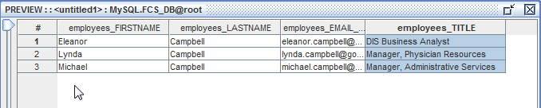
At this point you
have the option to save your query to a file so that you can recall
it later, instead of having to duplicate all the steps it has taken
you to create it. Return to the QUERY window using the back button
 .
Look for the Save Query button
.
Look for the Save Query button
 and click on it. Step through the Save As dialog wizard; provide a
name for your query file and save it to a directory of your choosing.
By default query files are generally saved using the .sql extension.
SQLeo has its own file type which uses the .xlq extension. You may
choose either one.
and click on it. Step through the Save As dialog wizard; provide a
name for your query file and save it to a directory of your choosing.
By default query files are generally saved using the .sql extension.
SQLeo has its own file type which uses the .xlq extension. You may
choose either one.
The time has come to perform a more complex query. So far we have been working with the employees Table. Now we are going to include columns from two other Tables: LANDLINES and MOBILE. Our database separates information regarding landline phones and mobile phones. If we wish to include the phone number and mobile phone number for each of the employees, we are going to need to include the LANDLINES and MOBILE Tables to the Content pane in the QUERY window. To do this, we either double-click those tables as they are listed or drag ‘n drop them into the Content pane. When we have completed this task, we will have all three Tables displayed in the Content pane. See IMAGE 30.
IMAGE 30

Notice that we have deselected every column from the LANDLINES Table except for the LANDLINE_NUMBER column. Also, we have deselected every column from the MOBILE Table except for the MOBILE_NUMBER column. These two columns are all we are interested in adding to our query. Note that we have also changed the criteria on the WHERE clause to: lastname=”MacDonald”.
At this point we need to JOIN our Tables together by performing a little drag ‘n drop operation. Using the left mouse button we will drag ‘n drop the EMPLOYEES ID column to the EMPLOYEE_ID column on the LANDLINES Table. We will do the same operation to the MOBILE Table. When we are done, we have two links joining the three Tables as seen in IMAGE 31.
IMAGE 31
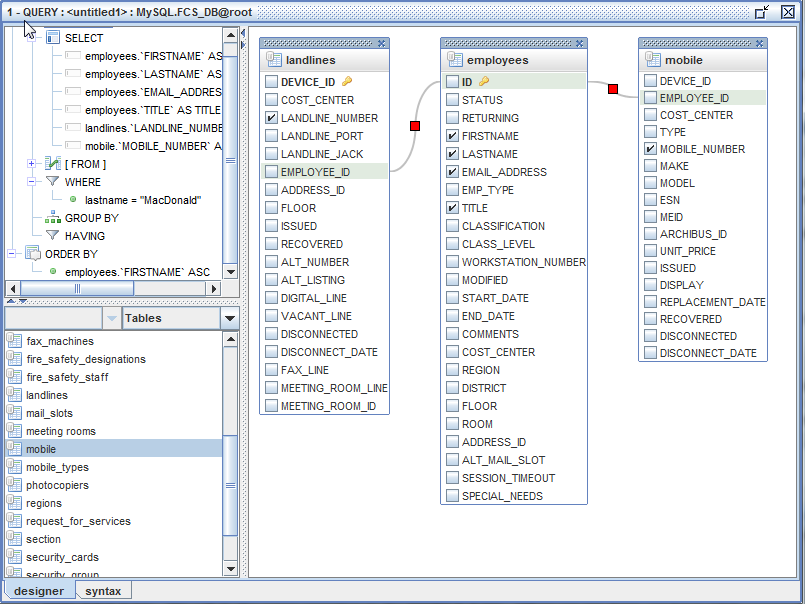
The EMPLOYEE_ID columns in both the LANDLINES and MOBILE Tables contain integer values referencing every employee record in the EMPLOYEES Table. The database will attempt to match these values up when it runs the SELECT query. To see how this looks as an SQL query, we click on the syntax tab. See IMAGE 32.
IMAGE 32
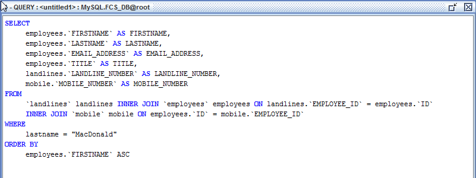
Now we will launch
the query by clicking on the launch query button
 .
See IMAGE 33 for the results.
.
See IMAGE 33 for the results.
IMAGE 33
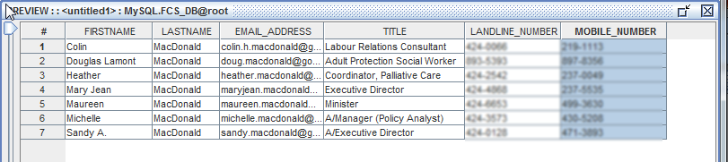
Our query results in seven records. The values for the LANDLINE_NUMBER and MOBILE_NUMBER have been blurred to protect the privacy of the individuals listed.
Let us return to IMAGE 31. Note that the JOIN lines connecting the Tables contain a RED square in the center. At any time you may edit the JOINs by using your right mouse button and clicking on the RED square. You will be provided with two menu options: EDIT or REMOVE. If you choose EDIT, you will be presented with a dialog box that allows you to make some refinements on the JOIN criteria.
The Command Editor is a separate internal window you can use instead of the Visual Query Designer. The Command Editor is intended for those who are confident in their abilities to type SQL queries with a thorough understanding of the SQL language. The Command Editor is a great place to practice your skills. If you get your statement wrong, the Command Editor will tell you this is the case.
While you can use the Command Editor to perform SELECT queries, it is also used to perform other functions using statements such as ALTER, INSERT, DELETE, UPDATE, etc. To perform the functions that involve these statements, you have to have the appropriate RIGHTS or privileges to execute them. This guide does not go into any detail on these, but we will explore some more SELECT statements.
To open the Command
Editor window, click on the Command Editor button
 on the toolbar.
on the toolbar.
Each RDBMS generally come with their own set of Functions which you can use in your SELECT statements to help display your results in a way that is meaningful to you. Among these Functions will be: CONCAT, COUNT, YEAR, FLOOR, MAX, MIN, MONTH, NOW, SUM, etc. While we will not cover all of these, we will show you how to use the CONCAT Function in the Command Editor.
IMAGE 34
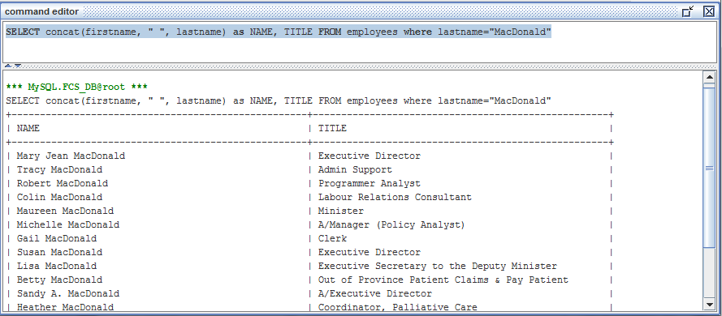
As you can see from
IMAGE 34, the Command Editor has a split pane. Inside the top pane
you type your query. When you click on the launch query
button
 on the toolbar, the results of your query will display in the lower
pane.
on the toolbar, the results of your query will display in the lower
pane.
In this scenario we decided to concatenate the first name and last name of each employee whose last name was equal to “MacDonald”. The CONCAT Function concatenates strings to produce a longer string as a result. Even if you pass numbers as parameters to the CONCAT Function, it will interpret those numbers as strings. Example: concat(1,2,3) will result in “123”. This is known as Type Conversion. In the example above, our CONCAT Function: concat(firstname, “ “, lastname) combines the string values in the Columns FIRSTNAME and LASTNAME with a space in between.
You are encouraged to experiment with all the other Functions supported by your database vendor.
Note that there is a keyword being used in the statement that we have not covered before now. It is the AS keyword. In the SELECT clause, as you list the Columns you wish to display, you can rename them as you see fit using the AS keyword. In the example in IMAGE 34 this comes in real handy as we were combining the FIRSTNAME and LASTNAME columns together under one label: NAME.
Most database systems also understand the wildcard star character *. Its meaning to the database is interpreted as “show me all columns”. When we use it as in IMAGE 35, the database returns all the columns from Table fax_machines even though you can’t see the remaining columns from the image. In a live demonstration, you would need to use the scrollbar to view the rest of the columns returned from the query.
IMAGE 35
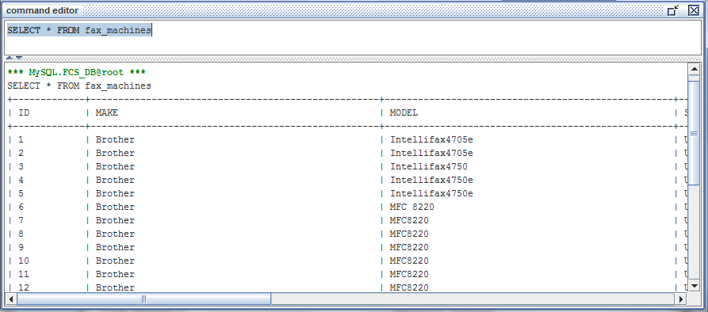
Let us take a step back, and return to the Content Window since there is more to explore there. We navigate to the Content Window first by returning to the Metadata Explorer. From there we can choose any Table being displayed in the Content pane, and using the right mouse button, we select show content from the menu options on the Table named districts.
IMAGE 36
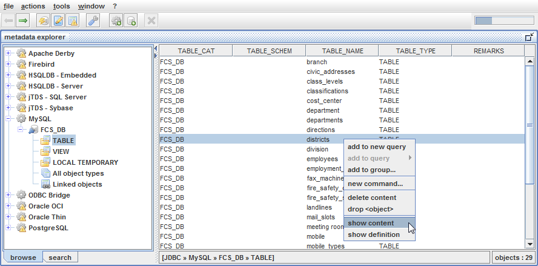
When the Content
Window is displayed note that the button toolbar has changed.
Additional buttons with a new set of options are presented to the
user as in IMAGE 37. The insert record button
 will allow you to insert a new record, while the delete record
button
will allow you to insert a new record, while the delete record
button
 allows you to remove any record in the Table. The filter
allows you to remove any record in the Table. The filter
 and find
and find
 buttons we will discuss later.
buttons we will discuss later.
IMAGE
37

In this window, it not only displays the data in the districts Table, but it also allows you to make changes to the Table. This is assuming you have the appropriate RIGHTS or privileges to make those changes in accordance to your user account on the database system. We have complete access to our database so we can show you some of the possible changes you can make to the Table from this window. The fields under the Column named DISTRICT_NUMBER can be edited. The values displayed under the Column labelled with the hash symbol # cannot be changed.
Before we can implement any changes to this Table we need to tell SQLeo on which Columns we want to make changes. In this case, there is only one Column. For this step, we select the actions menu and choose the submenu labelled update criteria… This will launch a dialog box as in IMAGE 38.
IMAGE 38

We place a check in the checkbox next to the Column named DISTRICT_NUMBER and click the OK button. At this point, if we implement any changes under the Column DISTRICT_NUMBER the changes will be recorded in the form of SQL statements. Before we commit the changes to the database Table, we will have a look at the SQL statements that were recorded. But first, let us make some changes.
We will select the
ninth record. We will insert a new record just below it. We can
either click on the insert record
 button, or we can use the right mouse button to display popup
menus. One happens to be an insert record menu item. See
IMAGE 39.
button, or we can use the right mouse button to display popup
menus. One happens to be an insert record menu item. See
IMAGE 39.
IMAGE 39

Take this time to note the other menu item options that are available for future reference. Notice there is a handy menu item labelled reset <old-value>. This has the same ability as an undo feature to return a prior value from a cell or field. After selecting the insert record menu, we obtain a new record item which is automatically given an ID value of 10. In the blank cell or field we type District 10. See IMAGE 40. Note that any changes made show in a blue font to indicate the change has not been saved yet.
IMAGE 40 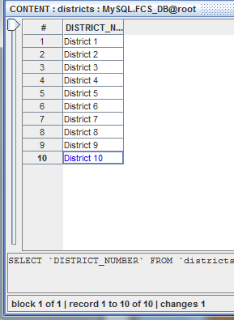
Before we save our changes, let us remove a record from this Table. District 3 is no longer required, so we will remove it. We right click on record three and select the delete record menu. See IMAGE 41.
IMAGE 41

Right away the record containing District 3 is removed as in IMAGE 42.
IMAGE 42
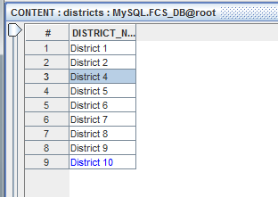
At this point we can have a look at the SQL statements that will be applied to the database before we save our changes. We select the actions menu and select the show changes… submenu. This brings up a dialog box as in IMAGE 43.
IMAGE 43

This is a good
opportunity to look closely at the syntax for inserting and deleting
records from a Table using the SQL language. We click on the Close
button and now we can save our changes to the database by clicking on
the apply changes to db
 button. Once the changes are saved, any field that was edited and
in blue font will now display in a normal black font. See IMAGE 44.
button. Once the changes are saved, any field that was edited and
in blue font will now display in a normal black font. See IMAGE 44.
IMAGE 44

When dealing with Tables that contain a lot of data, a sorting feature can make that data a lot easier to work with. Let us return to the Metadata Explorer and work with the employees Table again. We want to open up all the data in this Table, so using the right mouse button, we will right click on the employees Table and select the show contents… menu. See IMAGE 45.
IMAGE 45
When our Content window opens, our display looks as it does in IMAGE 46.
IMAGE 46

From what we can see in the image, the data is in no particular order. If you want to start making sense of it all, it may be helpful to sort the data by employees.LASTNAME. To perform a sort on the LASTNAME column, we use the right mouse button on the column header and select sort ascending… from the list of menu items as in IMAGE 47.
IMAGE 47
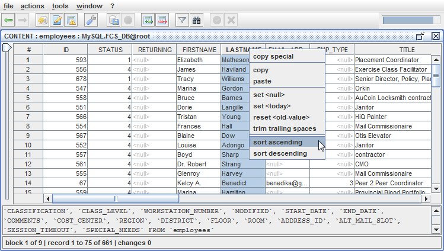
The result of the sort appears as in IMAGE 48. All the last names beginning with the letter A appear at the top of our display. Of course you have the option to sort in descending order. If your review IMAGE 47, you can see that option is available among the menu items.
IMAGE 48
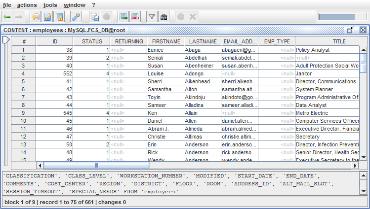
If you wish to
narrow your focus on certain records, you can filter the data to only
those records that are of interest. From the toolbar we will select
the filter
 button.
Doing this brings up a dialog box where we can enter criteria. We
will propose a simple criteria and enter LASTNAME = “Campbell” as
in IMAGE 49.
button.
Doing this brings up a dialog box where we can enter criteria. We
will propose a simple criteria and enter LASTNAME = “Campbell” as
in IMAGE 49.
IMAGE 49

When we click on the OK button, the CONTENT window displays only those records whose LASTNAME equals “Campbell”. See IMAGE 50.
IMAGE 50

Returning to the filters dialog box, note that there are numerous options to set your criteria. Where the equals symbol is displayed in IMAGE 49, you will find the options: =, <, >, <=, >=, <>, LIKE, NOT LIKE, etc. You can also enter more than one criteria using the AND keyword, or OR keyword. See IMAGE 51.
IMAGE 51
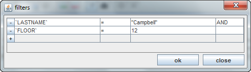
One final search
option is available to the user. It is the Find
 button. Clicking on this button on the toolbar brings up a familiar
find dialog box which you can use to find, and even replace, any term
that may reside inside all the data within a given Table. This
feature is typically found in many other applications and when you
tell it to perform its search; it will highlight the cell in a yellow
color.
button. Clicking on this button on the toolbar brings up a familiar
find dialog box which you can use to find, and even replace, any term
that may reside inside all the data within a given Table. This
feature is typically found in many other applications and when you
tell it to perform its search; it will highlight the cell in a yellow
color.
The Content window will not load all the records in memory, but only the first 100 records. As the user scrolls down the lists of records SQLeo will retrieve the next 100 records for display.
SQLeo records errors to a file inside the Log directory. When discussing issues on SQLeo with our support staff, you may be asked to send an email while attaching the SQLeo_Errors.log file for our inspection. Reviewing the log file will aid us in determining where in our code an exception has occurred affording us an opportunity to make changes to improve our software.
At the time of this writing support and discussion of issues can be obtained from the SourceForge website: http://sourceforge.net/p/sqleo/discussion/
SQLeo
Help Page